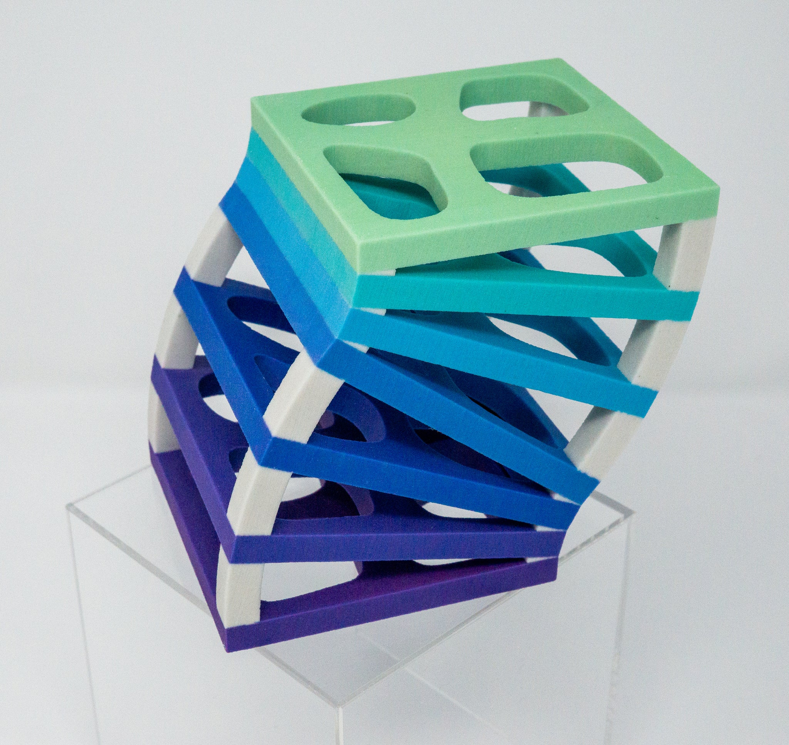
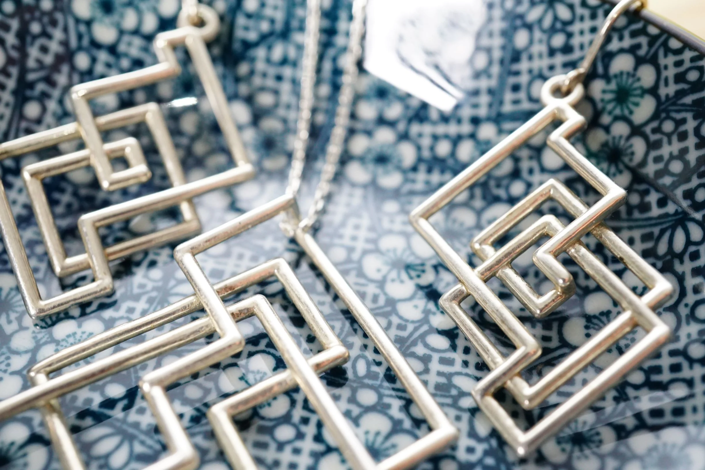
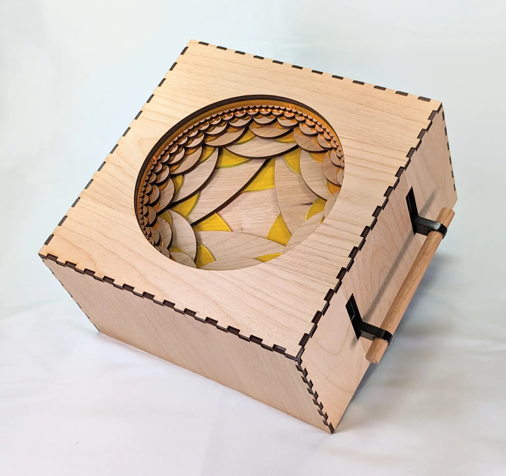
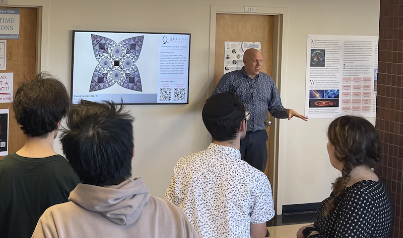

Design inspired by Art & Mathematics
I integrate the precision of mathematics with a creative design aesthetic. In doing so, I aim to engage an interdisciplinary audience with physical objects and interactive experiences.
Design at a Glance
- Exhibitions where my work appeared
- Portfolios of mathematical art and mathematical jewelry
- Design-related publications and talks
A focus on digital and physical processes
I use computational software to design artwork inspired by the inherent beauty of mathematics. The process is a discussion between the digital and the physical. I work to understand an underlying mathematical theory and the best way to realize it for an audience. I implement algorithms in Wolfram Mathematica in tandem with the choice of medium and materials. I realize my artwork through many types of manufacturing processes, including 3D printing, laser cutting, CNC machining, and more. The entire process is a learning experience in both the digital and physical realms.

Mathematical Jewelry
One medium that I developed extensively is that of mathematical jewelry. I designed dozens of pieces that I created through a 3D printing process and marketed through my Hanusa Design brand from 2017–2026. Through this process I explored the intersection between mathematics, design, and entrepreneurship.
- Materials: Selective laser sintered nylon, steel, brass, silver, and gold-plated brass.
- Visit Hanusa Design on the web at hanusadesign.com
- My jewelry was sold in the National Museum of Mathematics, the Queens Museum, The New York Hall of Science, Gallery North, Because Science, and the Wolfram Store.

Interactive Pieces
I aim to create interactive pieces to give people the agency to investigate mathematical ideas in their own way. The connection between the tactile and visual experience invites the viewer to linger, explore, and ponder.
- Eric Vergo and I developed the Emergence series: mixed-media pieces boxes combining technology, mathematics, and art. Read about the iterative development process used to create these pieces.
- See also: Experiential Braid Relations, a physical model to help people understand permutation groups.

MADE@QC
In 2024, I curated the Mathematical Art Digital Exhibition made up of artworks from 22 different artists/artist collaborations from all over the world. The exhibition is a portable installation that can be installed in any location that has a dedicated display. Contact me if you would like to install it locally.
- Visit the companion online exhibition with all the pieces and information about the mathematics and the artists.
